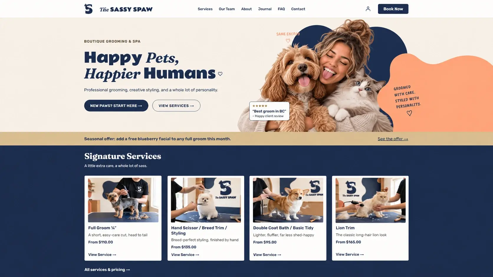

The Sassy Spaw
WordPress & WooCommerce Capstone Project
A custom WordPress and WooCommerce pet-grooming website built as a four-person BCIT capstone project, featuring dynamic content, customer pet profiles, online booking, and a playful boutique brand experience.

Project Overview.
The Sassy Spaw is a boutique pet-grooming website developed as a collaborative four-person capstone project during BCIT's Front-End Web Development program.
Built with a custom WordPress block theme and WooCommerce, the website helps pet owners explore grooming services, meet the grooming team, manage pet information, and book appointments. The project combines custom WordPress functionality with a playful, user-friendly boutique experience.
My Role.
As part of a four-person capstone team, I focused on custom WordPress development using PHP, Custom Post Types (CPTs), Advanced Custom Fields (ACF), and WooCommerce. My work included developing content structures for groomers, pets, testimonials, and FAQs, configuring custom fields and relationships, and working with Gutenberg block registration.
I developed customer-facing pet-profile functionality within WooCommerce's My Account area, allowing customers to add, edit, and manage their pets. I also worked on new-client onboarding, connecting customer and pet information with the welcome consultation process.
One of my most significant contributions was identifying a gap in the booking experience. Customers could save pet profiles, but there was no way to select an existing pet when booking a grooming appointment. I recognized that this disconnected two important features of the website and limited how useful the saved information could be for the grooming team.
To address this, I developed custom PHP and WooCommerce functionality that allows customers to select a saved pet during booking. The selected dog's size automatically populates the booking option and updates pricing, while the pet's information is carried into the cart. I also connected bookings to pet profiles so groomers could access important information, including allergies, health concerns, vaccination records, grooming quirks, and size. I tested the functionality locally, resolved pricing issues, and merged the solution into our team's codebase.
I also worked on service redirects, troubleshot taxonomy relationships and testimonial queries, and created optimized imagery for grooming services and staff profiles. Throughout development, I collaborated using GitHub branches, pull requests, and shared WordPress environments.
What I Learned.
This project expanded my understanding of WordPress beyond page building. I gained hands-on experience with PHP, custom post types, ACF relationships, Gutenberg blocks, and WooCommerce functionality. Working with these tools helped me better understand how different parts of a WordPress website connect and work together.
One of my biggest takeaways was learning to look beyond individual features and consider the entire user experience. Identifying the missing connection between pet profiles and bookings taught me the importance of understanding both customer needs and business requirements. Developing a solution strengthened my problem-solving skills and gave me more confidence working with PHP and WooCommerce.
I also gained valuable experience troubleshooting PHP, content relationships, and deployment issues. Working within a four-person team strengthened my Git workflow, communication, and ability to integrate my work with features developed by others.
Explore More Projects.
Take a look at the other websites and applications I've worked on.